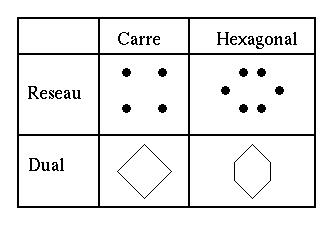
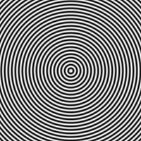
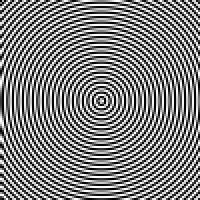
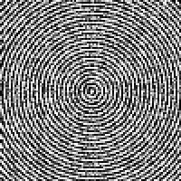
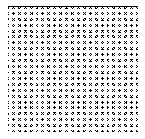
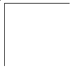
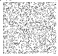

L'échantillonnage des images est une première étape de la numérisation des images. Elle est la restriction d'une fonction d'un espace (R2) sur un espace plus petit, S. Cette restriction, suivie d'une reconstruction, provoque des distorsions dues à la perte d'information. Sur une image, ces distorsions peuvent induire des effets visuels très perceptibles suivant la structure du sous-ensemble S. Dans le cas usuel d'un ensemble S régulier, on observe des effets d'aliasing dans certaines conditions. La technique de l'échantillonnage aléatoire est un des moyens de contourner ce problème, mais il y a un prix à payer.
L'échantillonnage classique se fait sur un ensemble régulier - une répétition spatiale de cellules. Dans les cas communs, on utilise les cellules suivantes :

Cette régularité fait apparaître une périodicité spatiale. Dans l'espace de Fourier, l'échantillonnage provoque un périodisation du signal. Le réseau initial a pour image dans l'espace de Fourier un réseau dual, et la transformée de Fourier du signal échantillonné est la somme des transformées de Fourier translatées par les points du réseau dual. La reconstruction se fait donc par un filtrage adéquat. On utilise les cellules de Voronoï du réseau pour ce filtrage. On voit donc que les fréquences du signal de départ doivent être incluses dans une cellule de Voronoï afin d'éviter un recouvrement des spectres, appelé "Repliement spectral".
Pour un réseau carré de largeur a, les fréquences spatiales doivent être inférieures à 1/(2a) suivant x et y et 1/(2.828 a) suivant la première bissectrice. Dans le cas contraire. on observe l'apparition de basses fréquences.
Par ailleurs, la reconstruction se fait dans notre cas par une convolution de la fonction par un signal rectangulaire, au lieu de faire un filtrage des basses fréquences. On observe donc un effet d'aliasing même avant de parvenir à la fréquence critique.
Le repliement spectral provoque l'apparition de structures très visibles et qu'il faut éviter. Pour ce faire, on utilise habituellement un pré-filtrage qui élimine les fréquences au-delà du seuil critique.
Une idée pour éviter ce problème sans pré-filtrage est de briser la régularité du réseau. On propose une répartition aléatoire pour les points d'échantillonnage. A cette occasion, on pert une grande partie des propriétés mathématiques du réseau. En particulier, comme la formule de Poisson ne s'applique plus, on ne sait plus rien dire sur la transformée de Fourier de la fonction échantillonnée.
L'intérêt de cette méthode reposera essentiellement sur la possibilité de sous-échantillonner sans avoir à filtrer avant l'échantillonnage.
Afin de pouvoir proposer une image résultat après échantillonnage, la répartition des points doit vérifier un certain ordre : à chaque point d'échantillonnage (Xn,Yn) on associe des coordonnées (xn,yn) dans la "petite image". Réciproquement, on cherche à avoir pour chaque point (x,y) de la "petite image" un point d'échantillonnage de la forme (f(x,w),g(y,w)) où w est l'événement aléatoire. Pour la pertinence visuelle, on s'attend à ce que f et g vérifient certaines propriétés :
- croissance : x1 < x2 => f(x1,w1) < f(x2,w2) et y1 < y2 => g(y1,w1)<g(y2,w2)
- répartition homogène
La répartition des points d'échantillonnage proposée est :
f_s(x,w) = g_s(x,w) = s.x + s.U(w)
où s est le rapport d'échelle et U est une v.a. uniforme
sur [0,1[.
Voici sur une image synthétique :
|  |
|
|  |
|
|  |
|
Les problèmes d'aliasing dûs à la mauvaise reconstruction ont disparu. On observe un bruitage de l'image, mais le résultat est visuellement plus agréable.
On peut faire un parallèle entre cette méthode et les pellicules chimiques. En effet, les grains sont repartis aléatoirement sur une pellicule. Cependant, le grain intègre la lumière sur toute sa surface, ce qui revient à un filtrage passe-bas, même imparfait. Il est cependant intéressant de constater que l'oeil est moins sensible à cette structure aléatoire qu'à une structure régulière.
Voici sur une image synthétique :
|  |
|
|  |
|
|  |
|
On peut apparemment conserver une information de texture en utilisant un échantillonnage aléatoire. Quoique fortement détériorée, celle-ci contribue néanmoins à une amélioration nette du confort visuel.
Remarque: Les images sous-échantillonnées ont été redimensionnées à des échelles permettant d'observer clairement les phénomènes décrits ci-dessus.
Remarque: Les images sous-échantillonnées ont été redimensionnées à des échelles permettant d'observer clairement les phénomènes décrits ci-dessus.